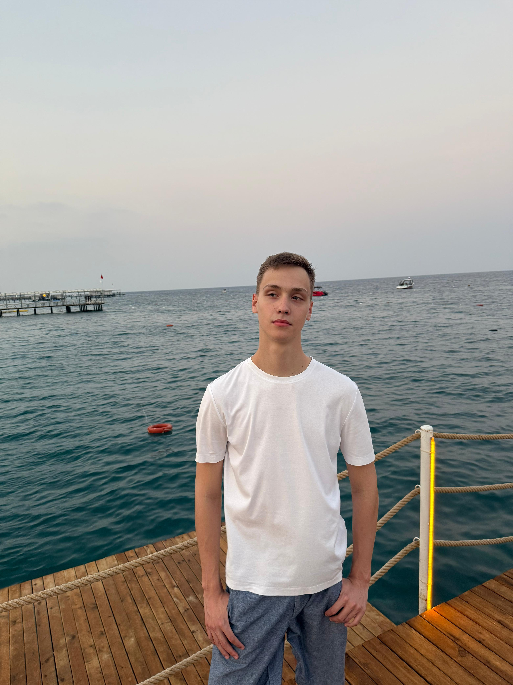

Меня зовут Романов Никита Глебович. Мне 19 лет. Я учусь на факультете мировой политики МГУ им М.В.Ломоносова. Я изучаю английский (уровень B1-B2) и испанский (пока что уровень А2) языки.
Я поступил на данное направление, потому что очень интересуюсь глобальной политикой, международными отношениями, глобальными мировыми процессами, а также смежными дисциплинами в этой области. Для международника важно владеть двумя или более иностранными языками, а с изучением языков у меня проблем вроде не было.
Теперь я думаю о том, чтобы идти не только в сферу политики и глобальных процессов, но и в сферу IT. Мне так понравилось писать код под создание своего сайта, что я уже не вижу себя "чистым" гуманитарием. Собственно результат вы видите прямо сейчас. Поэтому кто знает, куда меня занесет жизнь.

Контакты:
Telegram: @Nikita1Rome1
VK: https://vk.ru/nikita1rome1